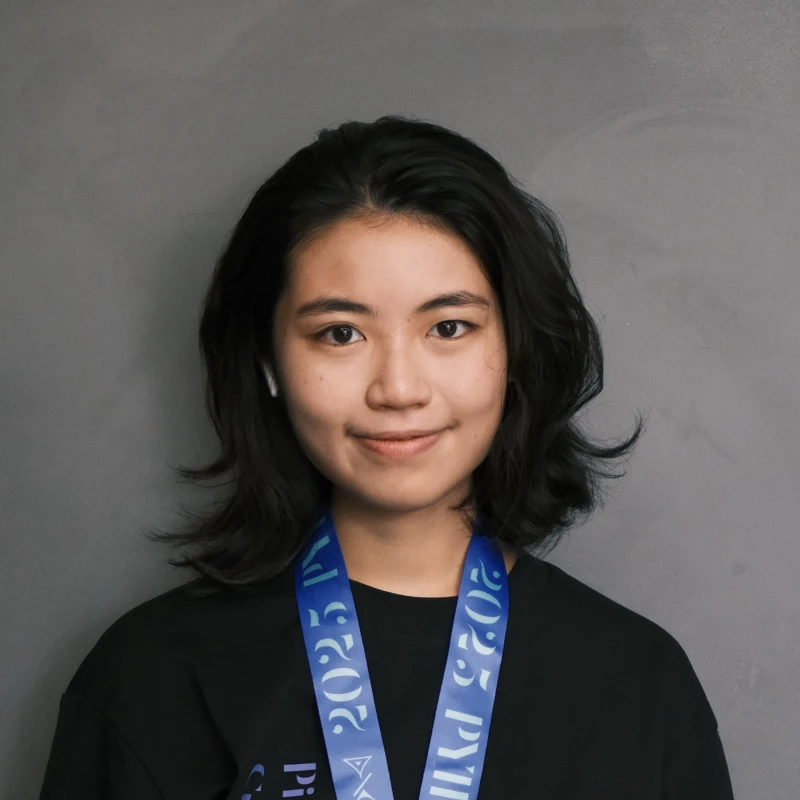

University of Washington · Seattle
About me

Hello! I'm Sadie (Xiaodi) Huang, a creative communicator with a background in film, media, and cross-cultural marketing. I will graduate from University of Washington in spring 2028.
I've moved from theatre and film into marketing and community work, learning new skills and perspectives along the way.
My toolkit
Adobe Photoshop / Premiere / After Effects / Illustrator / InDesign / Figma / Canva / Final Cut Pro / Excel / SQL / SPSS
Languages
Chinese (native) · English
Education
Columbia University
Sep 2024 – Dec 2024University of Oxford
Summer Program · Literature, Language, Digital Culture and Communication
Jun 2022 – Jul 2022